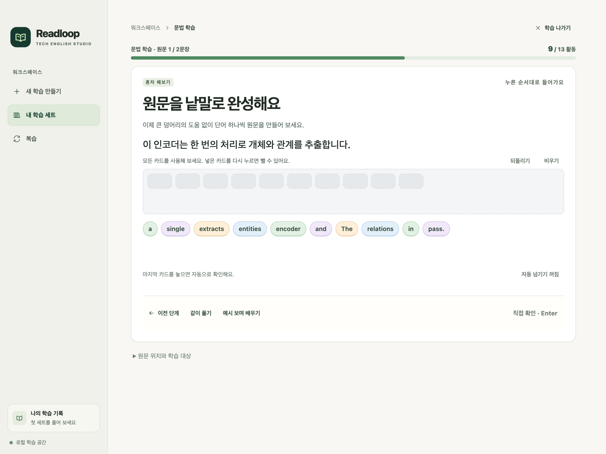
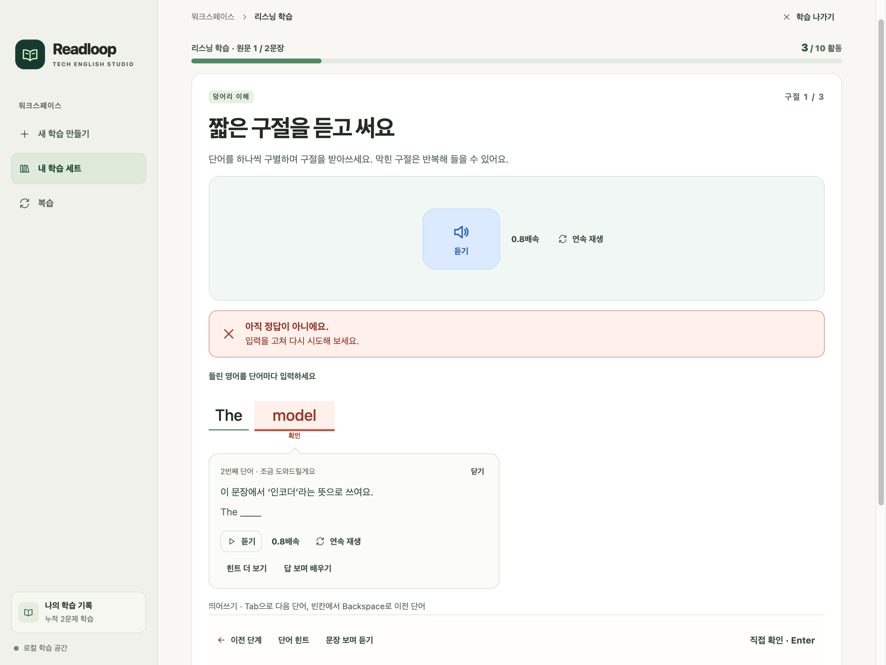
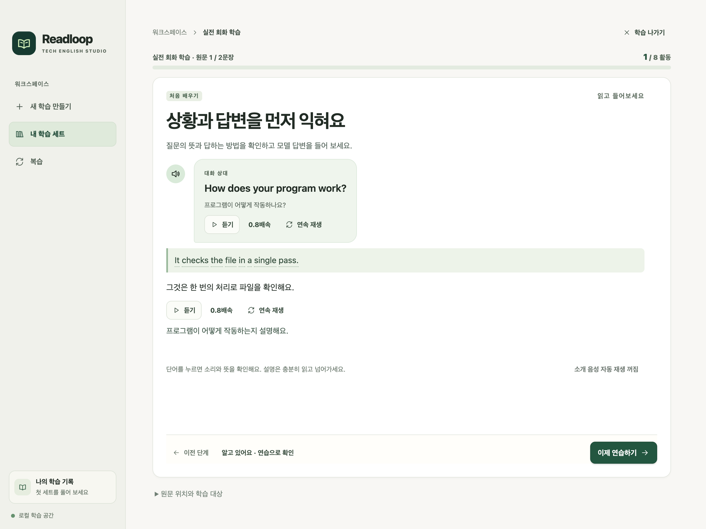

원문과 모드 선택
Readloop의 출발점은 사용자가 읽고 싶은 영문입니다. 학습 세트에서 어휘·실전 회화·문법·표현·리스닝 중 하나를 고릅니다. 모드별 진도를 따로 저장하므로 다른 모드를 열어도 이전 위치를 이어서 배울 수 있습니다. 원문 목록에서는 문장이나 한국어 뜻으로 검색하고, 선택한 문장에서 바로 시작합니다.
각 모드는 원문 전체를 다룹니다. 원문이 24문장이면 각 모드에 24개 원문 구간이 있으며, 한 구간 안에서 설명과 여러 연습 활동이 이어집니다. 화면의 원문 위치와 활동 수는 서로 다른 기준입니다. 예를 들어 원문 1번의 단어 두 개와 예문을 연습하는 동안에도 원문 위치는 1번으로 표시됩니다.
처음 배우기와 학습 단위
모든 모드에서 설명을 본 뒤 연습한다는 원칙은 같지만, 시작 화면과 활동 순서는 목표에 따라 다릅니다. 어휘는 원문 소개와 선정 단어의 쉬운 예문, 표현은 학습할 표현의 뜻, 회화는 생성한 대화 상황과 모범 답변을 중심으로 시작합니다. 리스닝은 원문의 뜻과 소리를 확인한 다음 짧은 구절을 듣습니다.
문법 모드에서는 원문과 한국어 뜻을 함께 보고 의미 덩어리, 덩어리 안의 낱말, 원문 전체의 낱말 조립, 쉬운 문장과 변형 순서로 진행합니다. 덩어리에는 번역뿐 아니라 주어·동작·설명 부분 등 문장에서 맡는 역할을 붙입니다.
다이어그램 원문
flowchart TD
A["문장의 뜻과 뼈대"] --> B["큰 덩어리 조립"]
B --> C["덩어리 안 낱말 설명"] --> D["덩어리를 낱말로 조립"]
D --> E["원문 전체 낱말 조립"] --> F["쉬운 예문에 적용"]
F --> G["바뀐 조건의 문장"]
classDef user fill:#edf5ef,stroke:#82a78d,color:#193d2a;
classDef ai fill:#edf3fc,stroke:#86a4cf,color:#203a65;
classDef saved fill:#fbf3df,stroke:#bda069,color:#594620;
classDef help fill:#fff0e7,stroke:#d59e79,color:#6b3e25;
class A,C user;
class B,D,E,F,G saved;
위 도식은 문법 모드의 진행 순서입니다. 다른 모드는 아래 각 모드의 설명처럼 목표에 맞춰 순서를 구성합니다.
예제 문장 The encoder extracts entities and relations in a single pass.에서는 다음 세 덩어리를 먼저 봅니다.
| 원문의 덩어리 | 뜻과 역할 |
|---|---|
| The encoder | 이 인코더는 — 동작의 주어 |
| extracts entities and relations | 개체와 관계를 추출한다 — 동작과 두 추출 대상 |
| in a single pass | 한 번의 처리로 — 처리 방식 |
in a single pass를 배울 때는 전체 뜻과 각 단어의 역할을 연결합니다. single을 따로 외우고 끝내지 않고, a single pass가 한 차례의 처리를 나타내며 in이 그 처리 방식을 문장에 연결한다는 점을 함께 설명합니다.
설명은 직접 읽고 넘어갑니다. 이미 아는 내용은 연습으로 확인할 수 있고, 다음 단계에서 막히면 이전 단계로 돌아가 설명과 예문을 다시 봅니다.
어휘 학습
원문에서 선정한 단어마다 문맥 속 뜻과 짧은 예문을 보여 줍니다. 예제의 encoder는 We use an encoder.처럼 주변 단어가 쉬운 문장에서 먼저 연습합니다. 이어 원문에서 같은 단어를 떠올리고 This encoder reads text.처럼 다른 예문에도 적용합니다.
기술 용어는 쉬운 예문에서도 같은 뜻을 유지합니다. 모델의 가지치기를 뜻하는 pruning을 배울 때 정원 가꾸기로 뜻을 바꾸면 원문 이해와 연결되지 않으므로, 생성 단계에서 기술적 의미를 유지하도록 요구합니다. 고유명사와 수치는 원문 설명에 남기고, 별도 어휘 연습은 재사용할 수 있는 일반 단어와 핵심 개념을 우선합니다.
문법 학습
문법은 뜻과 문장 뼈대를 확인한 뒤 큰 덩어리 조립으로 시작합니다. 그다음 각 덩어리의 낱말을 조립하고, 마지막에는 원문 전체를 낱말로 완성합니다. 큰 단위로 이해한 내용을 작은 단위에서도 직접 구성하도록 만든 순서입니다.

카드는 클릭한 순서대로 위에 들어갑니다. 선택한 카드를 다시 누르면 되돌릴 수 있습니다. 완성한 어순이 틀렸다면 그 상태와 확인할 부분을 보여 주며, 앱이 정답 순서로 재배치하지 않습니다.
원문 조립 이후에는 같은 구조를 쓴 쉬운 문장과 변형 문장을 배웁니다. 예제의 The model reads names.를 The models read names.로 바꾸면, 주어가 복수가 되어 reads 대신 read를 쓴다는 변화와 이유를 함께 확인합니다.

The → encoder → extracts → entities 순서로 누른 상태입니다. 선택한 순서를 유지하며, 위쪽 카드를 다시 누르면 뺄 수 있습니다.
표현 학습
표현 모드에서는 앞서 본 in a single pass의 전체 뜻을 익힌 뒤 내부 단어를 조립합니다. in, a, single, pass를 확인한 다음 일부 낱말을 가린 빈칸과 원문 속 표현 전체를 완성합니다.
이어 It checks the file in a single pass.와 We read the page in a single pass.를 연습합니다. 파일 검사와 페이지 읽기를 설명할 때도 같은 표현을 떠올리며, 주변 문장이 달라져도 ‘한 번의 처리로’라는 뜻과 결합을 유지합니다. 두 예문을 표현 전체의 입력 연습으로 연결해 원문에서 배운 표현을 다른 문장에서도 사용할 수 있도록 합니다.

표현 전체를 익힌 뒤 일부 낱말만 가린 연습입니다. 이 화면 다음에는 표현 전체를 떠올리는 활동으로 넓혀 갑니다.
리스닝 학습
처음부터 긴 원문 전체를 받아쓰게 하면 소리와 단어를 연결하기 어렵습니다. 뜻과 소리를 확인한 다음 짧은 구절, 일부 낱말, 원문 전체로 범위를 넓힙니다. 받아쓰기 단계에서는 정답 문장을 가리고 단어별 밑줄을 보여 줍니다.
일반 속도·0.8배속·연속 재생을 같은 위치에서 조작합니다. 반복해서 틀리면 막힌 단어와 연결된 짧은 구절을 다시 듣고, 해당 위치의 힌트로 뜻과 철자를 확인합니다. 그래도 모르겠다면 답을 보며 듣고 가린 뒤 다시 입력합니다.

리스닝의 위치 피드백은 입력한 단어와 정해진 답안을 비교한 결과입니다. 특정 단어의 밑줄을 표시할 수 있지만, 그 비교만으로 실제로 어느 소리를 못 들었는지까지 알아낸 것은 아닙니다.
실전 회화 학습
원문의 표현을 짧은 대화 상황으로 옮깁니다. 생성 단계에서 상황, 상대의 질문과 한국어 뜻, 모범 답변과 번역, 단어를 바꾼 답변, 후속 질문과 예시 답변을 한 묶음으로 만듭니다. 서로 다른 상황의 질문과 답이 섞이지 않도록 같은 대화 안에서 연습합니다.
앱 예제의 in a single pass를 이용하면 다음 순서로 배웁니다.
- 프로그램의 작동 방식을 설명하는 상황을 보고, 상대의
How does your program work?와 한국어 뜻을 확인합니다. It checks the file in a single pass.를 듣고 뜻을 익힙니다. 어떤 처리를 한 번에 한다는 답변인지 이해합니다.- 그 답변을 낱말 카드로 조립해 영어 어순을 확인합니다.
- 익힌 답변을 문장 전체로 말합니다. 녹음을 듣고 자신의 소리를 다시 확인하며, 모델이 이해하기 어렵다고 판단한 단어가 있으면 해당 위치의 피드백을 봅니다.
It reads the file in a single pass.처럼 동작이 달라진 답변을 먼저 배우고 다시 말합니다.- 같은 질문에 내 말로 답합니다. 이 단계에서는 모범 문장과 철자가 달라도 의도한 뜻을 자연스럽게 전달했는지 AI가 판단합니다.
- 후속 질문
Can it read a long file?의 뜻과Yes, it can read a long file.같은 예시를 확인한 뒤 자신의 답변으로 이어 갑니다.

긴 기술 원문이나 벤치마크 수치를 그대로 말하게 요구하지 않습니다. 원문에서 배운 표현을 짧은 대화에 적용하고, 뜻을 확인한 문장에서 바꿔 말하기와 후속 답변으로 범위를 넓힙니다. 이 회화는 문장별로 생성한 질문·후속 질문을 따라가는 학습이며, 모든 차례의 상대 발화를 실시간으로 새로 만드는 무제한 음성 챗봇은 아닙니다.
녹음 발음 피드백과 자유 답변의 의미 평가는 별도로 처리합니다. 정해진 답변을 읽는 녹음은 음성 모델이 직접 듣고 이해 가능 정도와 확인할 단어를 알려 줍니다. 자유 답변은 녹음을 전사한 텍스트 또는 직접 입력한 텍스트를 질문과 비교합니다. 이 경우에는 구체적인 표현과 문법·뜻을 설명하며, 타자로 입력한 답을 발음 점수로 표시하지 않습니다.
발음 피드백은 들린 내용과 모델의 판단입니다. 실제로 듣기 어려운 소리를 중심으로 알려 주도록 요청하며, 원어민 악센트와 닮았는지나 음소별 정확도를 검증한 점수로 해석하지 않습니다.
오답 지원과 복습
밑줄 입력은 단어별로 나누어져 있습니다. Space·Tab으로 다음 단어에 가고, 빈칸에서 Backspace를 누르면 앞 단어로 돌아갑니다. 정답 완성은 자동으로 확인하고, 입력 중간의 철자를 곧바로 오답으로 기록하지 않습니다. 완성 전 다른 답을 확인하려면 Enter를 사용합니다.
반복 오답에는 별도로 힌트 버튼을 찾지 않아도 막힌 위치에 말풍선을 띄웁니다. 처음에는 문맥 속 뜻이나 철자 단서를 주고, 계속 막히면 첫 글자·선택지 등으로 도움을 늘립니다. 답을 보여 준 경우에는 다시 가리고 시도할 수 있습니다. 카드 문제도 선택한 순서를 유지하면서 잘못 연결한 부분을 안내합니다.
도움을 받고 맞힌 활동은 혼자 떠올린 정답과 구분합니다. 오답이나 도움 사용이 있으면 대체 예문이 있는 활동은 그 예문을 복습 대상으로 남깁니다. 대체 예문이 없는 구절·자유 답변은 같은 활동을 다시 확인하며, 단순 재시도를 다른 문맥에서 기억한 증거로 처리하지 않습니다. 한 번 보았는지, 도움을 받아 풀었는지, 혼자 변형까지 풀었는지, 다른 날 다른 예문에서도 기억했는지를 따로 기록합니다.
현재 학습 안에 다른 예문이 남아 있으면 뒤쪽의 보충 활동으로 다시 연습합니다. 예정 시점이 된 항목은 모드 선택 화면의 해당 모드 아래 복습 N개에서 시작합니다. 복습 중 나와도 복습 이어하기로 같은 위치에 돌아갈 수 있습니다.
다이어그램 원문
flowchart TD
A["답을 확인했지만 반복 오답"] --> B["막힌 위치에 자동 말풍선"]
B --> C["뜻·철자 단서"] --> D["첫 글자·가능한 선택지"]
D --> E["답과 소리를 보며 배우기"] --> F["답을 가리고 다시 입력"]
F --> G["다른 예문이 있으면 복습"]
F --> H["없으면 같은 활동 재시도"]
classDef user fill:#edf5ef,stroke:#82a78d,color:#193d2a;
classDef ai fill:#edf3fc,stroke:#86a4cf,color:#203a65;
classDef saved fill:#fbf3df,stroke:#bda069,color:#594620;
classDef help fill:#fff0e7,stroke:#d59e79,color:#6b3e25;
class A,B,C,D,E help;
class F user;
class G,H saved;
힌트가 더 필요하면 사용자가 도움 단계를 높일 수도 있습니다. 글자를 입력하는 도중이 아니라 답을 확인한 뒤의 오답을 기준으로 지원합니다.